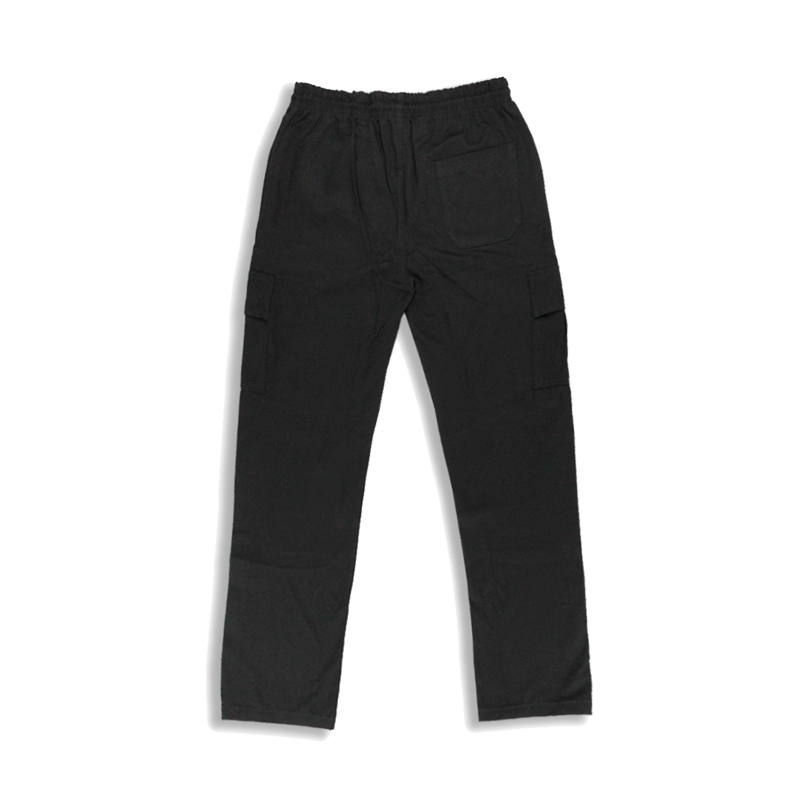
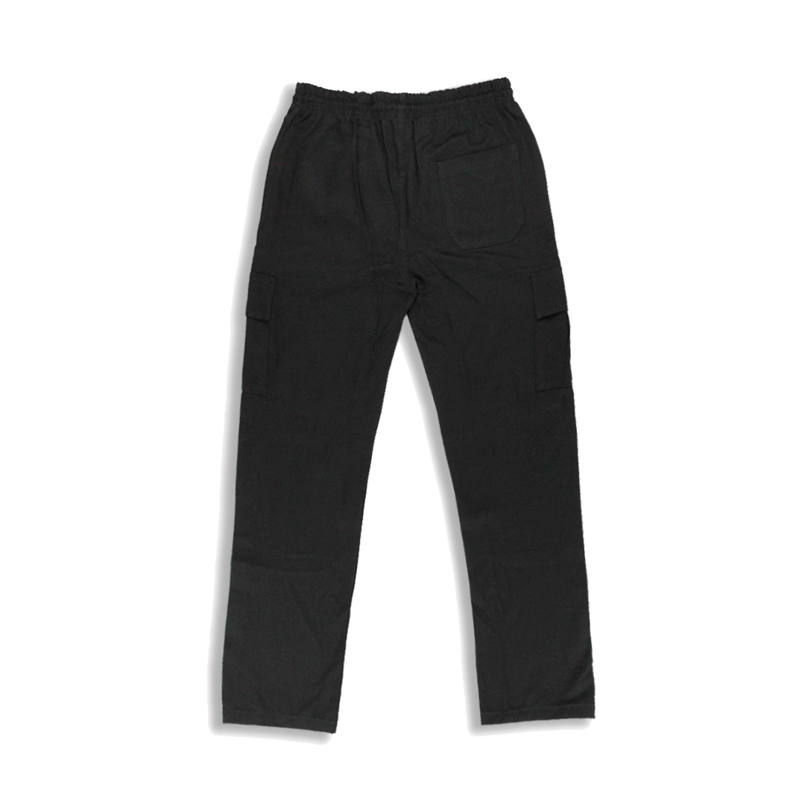

Sobre a Loja
Streetwear é um estilo de roupa casual que ganhou o mundo a partir da década de 1990. Ele surgiu inspirado pela moda hip hop de Nova York e pela cultura do surf do estado da Califórnia. O streetwear tem como propósito incluir elementos de roupas esportivas, punk, skate e moda de rua ao estilo de se vestir.
A moda também tem um papel social, cultural e político. E, com o streetwear, podemos perceber as manifestações comportamentais que transbordam as fronteiras regionais e se estendem pelo mundo afora. O streetwear representa a essência urbana e cultural de cada comunidade ou tribo, através de roupas e acessórios. Muito além de roupas das ruas, o streetwear está ligado ao comportame.
 
